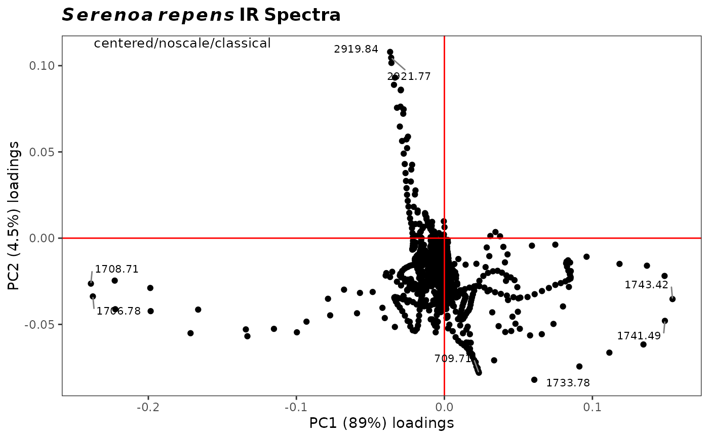

R/plot2Loadings.R
plot2Loadings.RdPlots two PCA loadings specified by the user, and labels selected (extreme) points. Typically used to determine which variables (frequencies) are co-varying, although in spectroscopy most peaks are represented by several variables and hence there is a lot of co-varying going on. Also useful to determine which variables are contributing the most to the clustering on a score plot.
plot2Loadings(spectra, pca, loads = c(1, 2), tol = 0.05, ...)An object of S3 class Spectra.
An object of class prcomp, modified to include a
list element called $method, a character string describing the
pre-processing carried out and the type of PCA performed (it appears on the
plot). This is automatically provided if ChemoSpec functions
c_pcaSpectra or r_pcaSpectra were used to create
pca.
A vector of two integers specifying which loading vectors to plot.
A number describing the fraction of points to be labeled.
tol = 1.0 labels all the points; tol = 0.05 labels
approximately the most extreme 5 percent. Set to "none" to
completely suppress labels. Note that a simple approach
based upon quantiles is used, assumes that both x and y are each normally
distributed, and treats x and y separately. Thus, this is not a formal
treatment of outliers, just a means of labeling points. Groups are lumped
together.
Parameters to be passed to the plotting routines. Applies to base graphics only.
The returned value depends on the graphics option selected (see GraphicsOptions).
None. Side effect is a plot.
The plot is displayed, and a ggplot2 plot object is returned if the
value is assigned. The plot can be modified in the usual ggplot2 manner.
See plotLoadings to plot one loading against the
original variable (frequency) axis. See sPlotSpectra for
a different approach. Additional documentation at
https://bryanhanson.github.io/ChemoSpec/
# This example assumes the graphics output is set to ggplot2 (see ?GraphicsOptions).
library("ggplot2")
data(SrE.IR)
pca <- c_pcaSpectra(SrE.IR)
myt <- expression(bolditalic(Serenoa) ~ bolditalic(repens) ~ bold(IR ~ Spectra))
p <- res <- plot2Loadings(SrE.IR, pca, loads = c(1, 2), tol = 0.001)
p <- p + ggtitle(myt)
p
